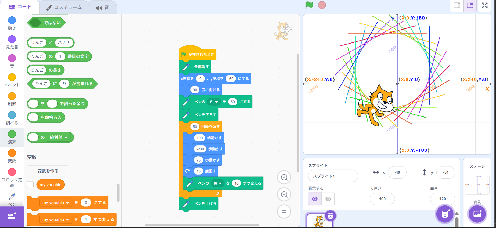
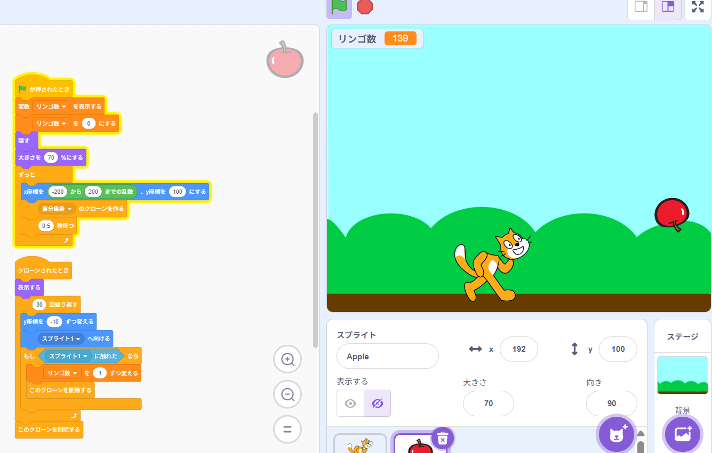

1週目のレポート ： 公大高専１年実習I-1
4a班17番 シューマ
第1週目
1-1 サイエンスアート

1.内容
スクラッチを用いて、角度や線の長さ、線の色などを調節するプログラミングを行い、
独自性のあるサイエンスアートを作成した。
2.感想
実際に作成したプログラミングを動かしてみて、自分が指示した通りに動き、想定通りの形が出来上がる
というプログラミングの面白さに気づくことができた。
1-2 ゲーム

1.内容
スクラッチを用いた、キャラクターの移動やリンゴの落下、
スコアのカウントといったリンゴを集めるゲームのコーディングを行った。
2.感想
実際にゲームを制作したことで、ビジュアルプログラミング言語であるために直感的に操作し、
プログラミング的思考を身につけることが可能で、論理的思考力や問題解決能力、創造的な発想力を養うことができたと感じた。
1-3 ホームページ作成
私のホームページ
1.内容
総合工学システム学科知能情報コース（I1）のレポートの基盤となる
ホームページを文字を使った本格的なコ－ディングを行って作成していった。
2.感想
スクラッチのようなブロックを組む形のコーディングではなく、英語などを使って作ることが新鮮で、
やってみたかったことを実践できてうれしかった。
各ページへのリンク
1週目のレポート
2週目のレポート
3週目のレポート
私のホームページ